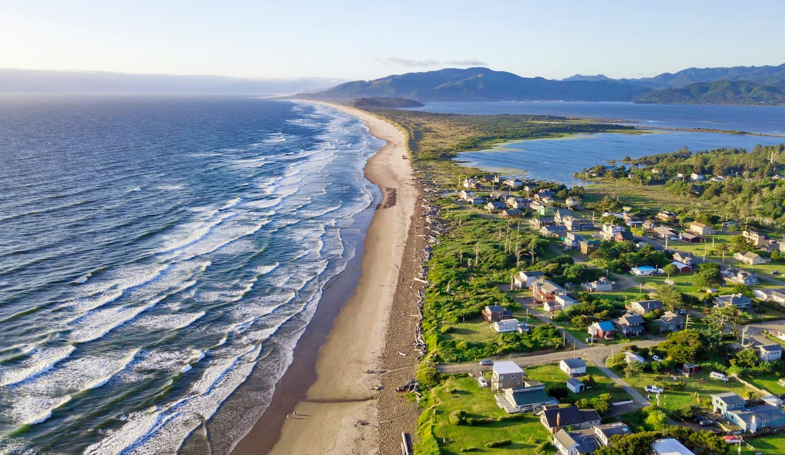

Tillamook, Oregon
Land of Cheese, Trees, and Ocean Breeze
Gateway to the Oregon Coast
| City | Founded |
Region

|
Population | Urbanicity | Affluence |
|---|---|---|---|---|---|
| Tillamook | 1891 | Willamette Valley | 5,196 | Rural | Average |
Did you know?

- Tillamook is named after the local Native American tribe of the same name. 3
- The Tillamook Cheese Factory is a famous cheese factory where viewers can see the entire cheese-making process live, and sample many cheeses and flavors of ice cream. It hosts over 1 million tourists each year, and the Tillamook County Creamery Association has since became a popular national cheese and ice cream producer. 3
- Tillamook gets its motto, the Gateway to the Oregon Coast, due to its tourism and location. Tillamook county includes a large portion of Oregon's northwestern coastal region. The nickname, "Land of the Cheese, Trees, and Ocean Breeze", comes from the coastal, sylvan, and dairy-themed tourist attractions. 4